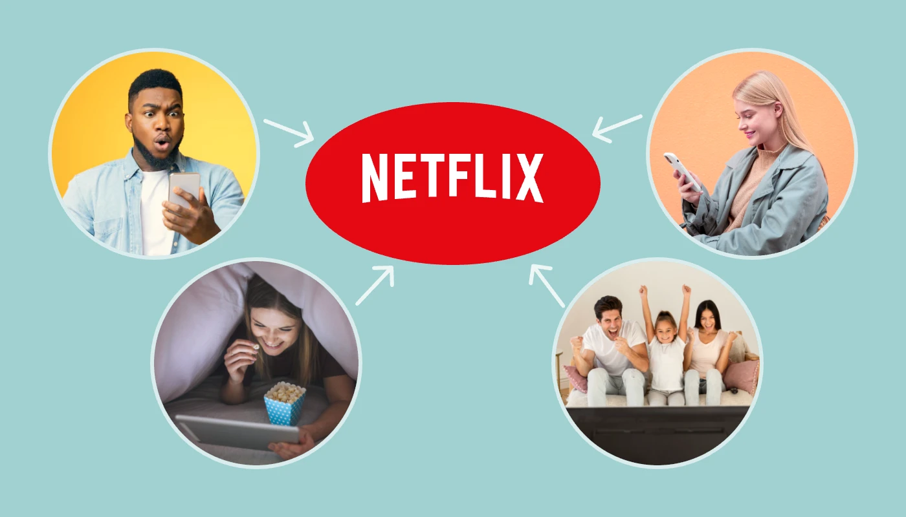

如何繞過Netflix密碼共享限制？(2025)
如果要評選"世界上不可或缺的流媒體服務"，Netflix 絕對榜上有名。據官方數據顯示，截至2024 年底，Netflix 全球付費用戶數量已突破 3 億，穩坐流媒體視頻服務龍頭地位。
但自從 Netflix 於 2023 年推出"家庭計劃"並開始嚴厲打擊賬戶共享後，許多人——宿舍學生、不同城市的遠程工作者以及分居的家庭成員——都覺得這很不方便。
那麼，到了 2025 年，還有什麼方法可以有效繞過 Netflix 的家庭共享限制並輕鬆共享Netflix 帳戶？
下面，我將向你介紹幾種在 2025 年仍然有效的方法。無論你是想省錢還是只是想不再受到 Netflix 共享檢查的標記，本指南都將幫助你找到最適合你的解決方案。
Netflix 最新密碼共享規則(2025 年)
自2025年起，Netflix的共享政策更加嚴格。該平臺現在不僅會檢查你的登錄IP地址，還會結合設備ID、觀看習慣和地理位置等數據，以確定用戶是否屬於同一"家庭"。
換句話說，過去那種"與朋友分攤計劃"的伎倆現在幾乎被完全禁止了。這項政策已在包括美國、英國和法國在內的多個國家全面實施。
Netflix 如何知道你正在共享密碼？
很多用戶問："Netflix 如何檢測帳戶共享？"這並不是什麼魔法——Netflix 主要在三個方面進行交叉檢查：
IP 地址和位置匹配： Netflix 會記錄主家庭賬戶的常用網絡位置。如果其他設備持續從"非主"位置登錄，系統會將這些訪問標記爲可疑，並可能觸發驗證。設備數據和使用模式： 每次登錄時，設備都會留下痕跡——硬件 ID、操作系統類型、典型登錄時間等。Netflix 會分析這些數據以發現異常。賬戶行爲分析(AI 模型)： Netflix 現在使用機器學習模型來分析觀看模式——觀看時間、內容類型、字幕語言等等。如果算法檢測到較大差異，就會提示進行驗證。
所以，正如你所見，如今繞過 Netflix 的家庭套餐檢查非常困難，許多非官方的"規避方法"存在法律、合規或安全風險，並且可能違反 Netflix 的條款。如果你仍然想嘗試，這裡有一些實用的規避方法或許有效——我將在下文列出。
如何繞過 Netflix 的家庭計劃？
以下是繞過 Netflix 家庭計劃限制的四種經過驗證的方法。
基本方法
讓我們從兩個最簡單、最安全的選項開始。
1. Netflix 官方的"
主賬戶持有者可以在現有的標準或高級套餐基礎上額外添加 1-2 名成員，但需額外付費。價格因地區而異，大約爲每月 6.99 美元/8.99 美元，且額外成員只能在與主賬戶相同的國家/地區使用該賬戶。
2. 一種更"老派"但仍然可行的方法。
如果你和主賬戶持有人住得比較近，你可以暫時登錄他們家的 Wi-Fi，然後在自己家繼續觀看。理論上，如果雙方距離足夠近，且登錄行爲一致，Netflix 可能仍會將你們視爲同一家庭的成員。
這兩種方法都有缺點："額外會員"需要額外付費，而
👉 接下來，我將介紹一些更靈活、在實踐中往往更有效的方法。
刪除代碼行，刪除驗證彈出窗口
Netflix 有時會彈出驗證窗口阻止播放——如果我們能關閉該窗口，家庭套餐限制就會暫時被繞過。在一些論壇上，用戶報告了一種短期瀏覽器技巧：
- 當Netflix"家庭驗證"彈出窗口出現時，按
F12 或右鍵單擊並選擇"檢查 "以打開開發人員工具。 - 使用
Ctrl+F (或搜索框)找到與彈出窗口相關的代碼行(例如，類似於"NFModel...fullscreen")，然後刪除該行。 - 關閉開發人員面板 - 彈出窗口將暫時消失並恢復播放。
理論上，這可以短暫隱藏 Netflix 的驗證界面並恢復播放。但請注意——這是一個非官方的臨時前端修改，實際上
實際上，這僅在瀏覽器中有效。只要你刷新頁面或再次登錄，網站就會重新加載驗證模塊。由於其有效性有限且存在風險，因此不建議使用此方法。
NordVPN 的 Meshnet 功能
NordVPN 的Meshnet功能本質上是將來自不同位置的設備連接到一個"虛擬家庭網絡"。它使你的計算機和手機看起來好像連接到同一個 Wi-Fi，從而允許你安全地共享連接或訪問受區域鎖定的內容。
設置方法如下：
1️⃣在你的計算機或手機上安裝並登錄
2️⃣ 在應用界面，找到
3️⃣ 啓用 Meshnet 並選擇
4️⃣ 點擊
5️⃣ 一旦收件人接受邀請，你們雙方將共享相同的 IP 地址。
一旦通過 Meshnet 連接，遠程設備將顯示與主帳戶位於同一網絡上，讓你繞過簡單的基於 IP 的檢查。
這意味着，如果你可以將位於主帳戶地址的計算機或設備鏈接到 Meshnet，你的設備將看起來像是從家庭網絡登錄 Netflix，並逃避 IP 地理位置檢查。
繞過 Netflix 家庭套餐的四種方法比較
以下是對上述四種主要方法的簡要概述——包括它們的成本、穩定性、難度和總體推薦評級：
| 方法 | 每月費用 | 穩定 | 困難 | 推薦 |
|---|---|---|---|---|
| 額外會員 | 每位用戶 7.99 美元(官方價格) | 穩定的 | 🟢 簡單 | ⭐⭐⭐ |
| 相同的 Wi-Fi 連接 | 自由的 | 穩定的 | 🟢 簡單 | ⭐⭐ |
| 刪除代碼行 | 自由的 | ⚠️ 不穩定 | 🔴 困難 | ⭐⭐ |
| NordVPN 網狀網絡 | 自由的 | 緩和 | 🟡 中等 | ⭐⭐⭐⭐ |
如你所見，每種方法都有其自身的利弊。官方的"額外會員"選項會增加費用，通過同一 Wi-Fi 連接會受到地理位置的限制，而且刪除代碼行在技術上違反了 Netflix 的服務條款。
其中，
繞過 Netflix 家庭計劃的替代方案有哪些？
如果你"繞過 Netflix 家庭驗證"的主要目的是省錢並且仍然與他人共享訪問權限，那麼實際上有一些更智能、更可靠的選擇。
使用VPN獲取更便宜的Netflix Premium
Netflix 的定價因國家/地區而異，受當地收入水平、貨幣匯率和市場策略的影響。
這造成了巨大的地區價格差異。例如，同樣的 Netflix Premium 套餐在印度、埃及或阿根廷的價格可能不到美國的三分之一。
因此，你無需嘗試有風險的共享技巧，只需使用 VPN 切換你的虛擬位置並按照其他國家/地區的當地費率進行訂閱即可。
NordVPN 的 Meshnet 等工具可以幫助你模擬家庭網絡連接，但你也可以通過更便宜的國家/地區的標準 VPN 服務器進行連接來完成訂閱。
下面是區域價格比較表，顯示了 Netflix 在不同國家/地區的費用。
| 國家 | 標準 | 優質的 | 國家 | 標準 | 優質的 |
|---|---|---|---|---|---|
| 🇺🇸 | 17.99 美元 | 23.99 美元 | 🇩🇪 | 14.50美元(13.49歐元) | 19.50美元(17.99歐元) |
| 🇮🇳 | 2.90美元(249盧比) | 6.00美元(499盧比) | 🇰🇷 | 10.25 美元(13，500 韓元) | 13.80 美元(18，500 韓元) |
| 🇪🇬 | 2.00 美元(100 埃及鎊) | 3.50美元(170埃及鎊) | 🇮🇹 | 14.50美元(13.49歐元) | 19.50美元(17.99歐元) |
| 🇦🇷 | 3.30 美元(2900 阿根廷比索) | 5.00 美元(4400 阿根廷比索) | 🇪🇸 | 14.50美元(13.49歐元) | 19.50美元(17.99歐元) |
| 🇫🇷 | 14.99美元(13.49歐元) | 19.99美元(17.99歐元) | 🇲🇽 | 7.80 美元(約 139 墨西哥比索) | 10.80(約199墨西哥比索) |
你可以選擇以上任何國家/地區訂閱，以價格最優惠為準。但請注意，此方法嚴格
📌
你可以查看我之前的指南—— "如何使用 VPN 以更低的價格獲得 YouTube Premium" 。儘管該指南主要關注 YouTube，但 VPN 的設置和付款流程幾乎相同，因此你可以按照相同的步驟順利完成 Netflix 跨區域訂閱。
使用VPN跨地區訂閱後，你還可以享受該國家/地區的本地Netflix庫。
想知道 Netflix 上有哪些值得一看的劇嗎？快來看看我們精心挑選的文章——
通過 奈飛小鋪 獲取更便宜的 Netflix Premium
如果你想以更低的價格更輕鬆、更安全地享受 Netflix Premium，而無需使用 VPN 或進行危險的瀏覽器調整，那麼 奈飛小鋪 無疑是最佳選擇。即使你只有一個人，也可以享受家庭套餐價格。

與代碼編輯或 VPN 方法相比，在 奈飛小鋪 上購買 Netflix Premium 帳戶是一種更簡單、更可靠的"繞過"選項。
奈飛小鋪 是一個值得信賴的訂閱共享平臺，用戶可以分攤 Netflix、YouTube、Spotify 和 Disney 等流媒體平臺的費用。
你只需支付官方價格的一小部分，即可獲得相同高級功能的完全訪問權限。
我個人使用 奈飛小鋪 已經兩年多了 - 從未遇到過賬戶被禁或訪問問題 - 而且它總共爲我節省了大約 400 美元。
它的工作原理如下：
1️⃣ 前往 奈飛小鋪 網站，點擊右上角的登錄/註冊。
2️⃣ 登錄後，在首頁找到Netflix並點擊。
3️⃣ 選擇適合你需求的計劃——頁面清楚地列出了每個選項之間的差異。
4️⃣ 單擊立即購買，輸入你的付款詳細信息，然後確認。
5️⃣ 付款完成後，奈飛小鋪 將立即處理你的訂單。根據你的套餐，你的賬戶將直接充值，或受邀加入共享家庭羣組。
奈飛小鋪 有時會出現暫時售罄的情況，尤其是像 Netflix 這樣的熱門產品。在這種情況下，你仍然可以以類似的折扣購買 Disney+、HBO Max 或其他替代產品。
總的來說，這是一種強烈推薦的、輕鬆的流媒體享受方式，而且不需要花費太多。
結論
隨着Netflix不斷收緊家庭套餐政策，跨地區登錄或重置"家庭位置"的成功率持續下降。更高的價格和更頻繁的驗證，讓原本簡單的觀看體驗變得令人沮喪且不穩定。
這就是 奈飛小鋪 的用武之地——它提供了一個更安全、更持久的替代方案。憑藉其智能共享系統和快速響應的客服支持，你可以享受完整的
💡
常問問題
Netflix VPN 技巧還有效嗎？
是的，你仍然可以使用 VPN 訪問不同的 Netflix 庫。但是，需要注意的是，Netflix 從未正式支持使用 VPN，並且會主動阻止 VPN 流量。成功的關鍵在於使用可靠的 VPN 並偶爾切換服務器。
哪個 VPN 實際上可以與 Netflix 配合使用？
NordVPN 是 Netflix 的最佳選擇，它擁有龐大的服務器網絡、可靠的性能和易於使用的應用程序。它擅長解鎖來自不同國家的 Netflix 庫，無論你是 VPN 專家還是新手，都可以輕鬆連接並開始流媒體播放。
爲什麼 Netflix 不兼容 VPN？
如果你無法使用 VPN 訪問 Netflix，則表示 Netflix 已檢測到並屏蔽了你所連接服務器的 IP 地址。要獲取新的 IP，只需切換到同一地區的其他服務器即可——新服務器可能尚未被屏蔽。